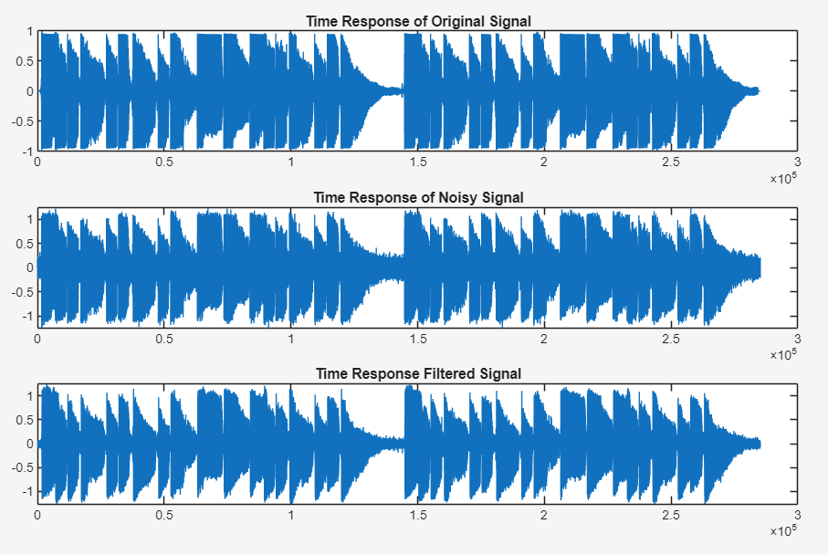
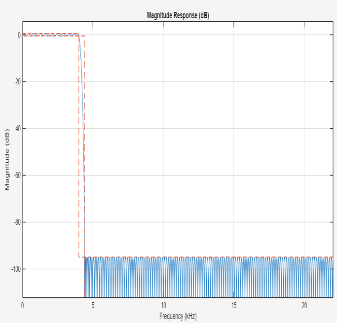
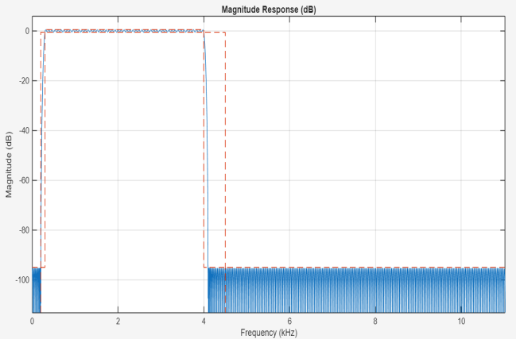
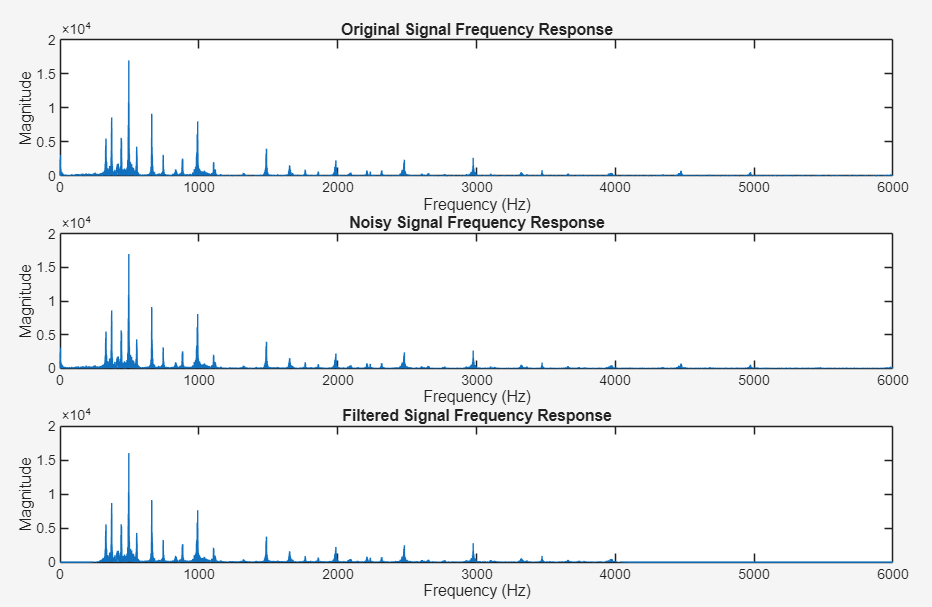
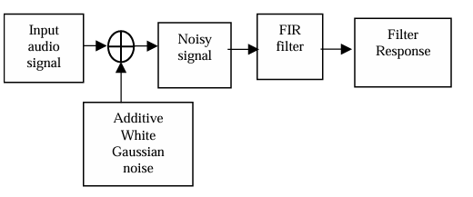

Audio Signal Filtering
I compared two FIR filters in MATLAB after adding white Gaussian noise to an audio recording.
These figures are taken from the project report and show the filtering workflow and MATLAB results.





Original noisy and low-pass filtered signal in the time domain
Low-pass FIR magnitude response from the report
Band-pass FIR magnitude response from the report
Original noisy and filtered signal spectra
FIR audio filtering workflow
About this project
I worked with Md. Sabbir Uzzaman Khan on a MATLAB study of audio noise reduction. We added white Gaussian noise at 15 dB SNR then compared low-pass and band-pass FIR filters in MATLAB R2024a.
The low-pass filter was designed around a 4 kHz passband and a 4.4 kHz stopband. It reduced high-frequency hiss but also made the audio quieter and more muffled. The band-pass filter kept the speech range from 300 Hz to 4 kHz while rejecting frequencies below 200 Hz and above 4.5 kHz. Speech stayed clearer and louder although noise remained where it overlapped with the voice.
The time and frequency plots made the main trade-off easy to hear: simple filters can reduce noise but they cannot remove noise that shares the same frequencies as speech. Fixed cutoffs also limit how well the design can handle different recordings.
What it does
- Added white Gaussian noise at 15 dB SNR
- Compared low-pass and band-pass FIR filters
- Analyzed original noisy and filtered signals in time and frequency